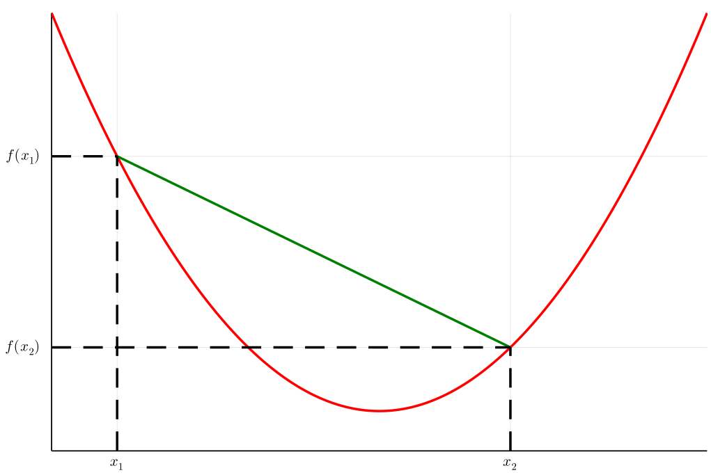

Cap. 2
Funzione convessa
Una funzione \(f: \mathbb{R} \to \mathbb{R}\) è convessa se per ogni \(x_1, x_2 \in \mathbb{R}\) e per ogni \(\lambda \in \left[ 0,1 \right]\) si ha \[ f(\lambda x_1 + (1 - \lambda)x_2) \leq \lambda f(x_1) + (1 - \lambda)f(x_2) \]

Figura 1: Funzione convessa.
Disuguaglianza di Jensen
Sia \(X\) una v.a. e sia \(f: \mathbb{R} \to \mathbb{R}\) una funzione convessa. Allora \[ \mathbb{E}\left[ f(X) \right] \geq f(\mathbb{E}\left[ X \right]) \]
Proof:
Consideriamo solamente il caso ristretto in cui \(f\) ammette uno sviluppo di Taylor fino al secondo ordine, ovvero
\[
f(x) = f(x_0) + f'(x_0)(x - x_0) + \frac{f''(c)}{2}(x - x_0)^2
\]
per qualche \(c\) intermedio all'intervallo \(x\) e \(x_0\).
Facciamo ora riferimento al caso \(x_0 = \mathbb{E}\left[ X \right]\). Inoltre per convessità di \(f\) sfruttiamo il fatto che \(f''(c) \geq 0\). \[ f(x) = f(\mathbb{E}\left[ X \right]) + f'(\mathbb{E}\left[ X \right])(x - \mathbb{E}\left[ X \right]) + \frac{f''(c)}{2}(x - \mathbb{E}\left[ X \right])^2 \]
Per quanto osservato prima affermare che \[ \frac{f''(c)}{2}(x - \mathbb{E}\left[ X \right])^2 \geq 0 \] perciò \[ f(x) \geq f(\mathbb{E}\left[ X \right]) + f'(\mathbb{E}\left[ X \right])(x - \mathbb{E}\left[ X \right]) \] \[ \implies f(X) \geq f(\mathbb{E}\left[ X \right]) + f'(\mathbb{E}\left[ X \right])(X - \mathbb{E}\left[ X \right]) \]
Applicando ora la media otteremo che
\begin{align*} \mathbb{E}\left[f(X)\right] &\geq f(\mathbb{E}\left[ X \right]) + f'(\mathbb{E}\left[ X \right])\mathbb{E}\left[X - \mathbb{E}\left[ X \right]\right]\\ &= f(\mathbb{E}\left[ X \right]) + f'(\mathbb{E}\left[ X \right])(\mathbb{E}\left[ X \right] - \mathbb{E}\left[\mathbb{E}\left[ X \right]\right])\\ &= f(\mathbb{E}\left[ X \right]) + f'(\mathbb{E}\left[ X \right])(\mathbb{E}\left[ X \right] - \mathbb{E}\left[ X \right])\\ &= f(\mathbb{E}\left[ X \right]) \;\; \square \end{align*}Valore atteso condizionato
Sia \(P(\cdot \vert A)\) una misura di probabilità (condizionata all'evento \(A\)). La media condizionata di una v.a. \(X\) è quindi definita come \[ \mathbb{E}\left[ X \vert A \right] = \sum_{x_k} x_k P(X = x_k \vert A) \]
Esempio
Consideriamo il caso del lancio di due dadi equi , dove \(X_1\) e \(X_2\) sono le v.a. cheindicano i due valori ottenuti dai singoli lanci rispettivamente, e con \(X = X_1 + X_2\) la loro somma.
Calcoliamo \(\mathbb{E}\left[ X \vert X_1 = 2 \right]\)
\begin{align*} \mathbb{E}\left[ X \vert X_1 = 2 \right] &= \sum_{k = 2}^{12} kP(X = k \vert X_1 = 2)\\ &= \sum_{k = 2}^{12} k \frac{P(X = k , X_1 = 2)}{P(X_1 = 2)}\\ &= \sum_{k = 2}^{12} k \frac{P(X_2 = k - 2 , X_1 = 2)}{P(X_1 = 2)}\\ (\text{indipendenza}) &= \sum_{k = 2}^{12} k \frac{P(X_2 = k - 2)P(X_1 = 2)}{P(X_1 = 2)}\\ &= \sum_{k = 2}^{12} k P(X_2 = k - 2)\\ &= \sum_{k = 3}^{8} k P(X_2 = k - 2)\\ &= \frac{11}{6} \end{align*}Calcoliamo \(\mathbb{E}\left[ X_1 \vert X = 5 \right]\)
\begin{align*} \mathbb{E}\left[ X_1 \vert X = 5 \right] &= \sum_{k = 1}^{6} k P(X_1 = k \vert X = 5)\\ &= \sum_{k = 1}^{6} k \frac{ P(X_1 = k, X = 5) }{P(X = 5)}\\ &= \sum_{k = 1}^{6} k \frac{ P(X_1 = k, X_2 = 5 - k) }{P(X = 5)}\\ &= \sum_{k = 1}^{4} k \frac{ P(X_1 = k, X_2 = 5 - k) }{P(X = 5)}\\ &= \sum_{k = 1}^{4} k \frac{ 1/36 }{ 4/36 }\\ &= \sum_{k = 1}^{4} k \frac{ 1 }{ 4 }\\ &= \frac{5}{2} \end{align*}
Lemma 2.5
Siano \(X\) e \(Y\) due v.a. discrete definite su uno stesso spazio di probabilità. Allora, se \(X\) ha speranza matematica finita, vale la seguente relazione \[ \mathbb{E}\left[ X \right] = \sum_{y_k} \mathbb{E}\left[ X \vert Y = y_k \right]P(Y = y_k) \] Proof:
\begin{align*} \sum_{y_k} \mathbb{E}\left[ X \vert Y = y_k \right] P(Y = y_k) &= \sum_{y_k} \left( \sum_{x_h} x_h P(X = x_h \vert Y = y_k) \right) P(Y = y_k)\\ &= \sum_{x_h} x_h \cdot \sum_{y_h} P(X = x_h \vert Y = y_k) P(Y = y_k)\\ &= \sum_{x_h} x_h \cdot \sum_{y_h} \frac{ P(X = x_h, Y = y_k) }{ P(Y = y_k) } P(Y = y_k)\\ &= \sum_{x_h} x_h \cdot \sum_{y_h} P(X = x_h, Y = y_k)\\ &= \sum_{x_h} x_h P(X = x_h)\\ &= \mathbb{E}\left[ X \right] \;\; \square \end{align*}